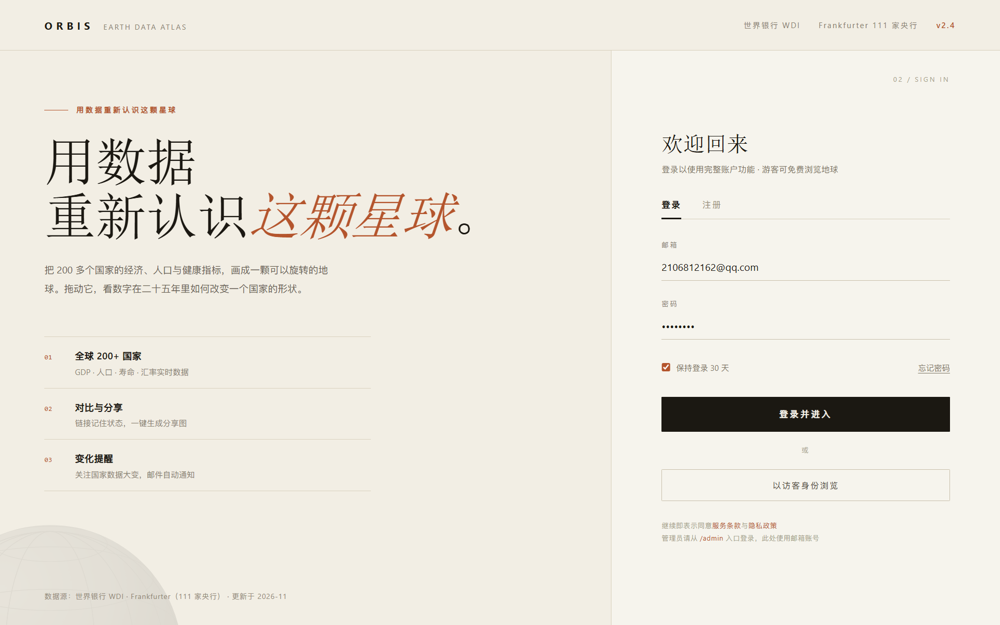
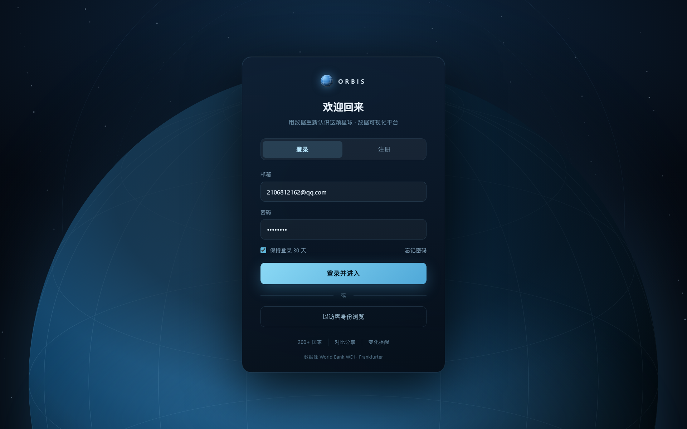
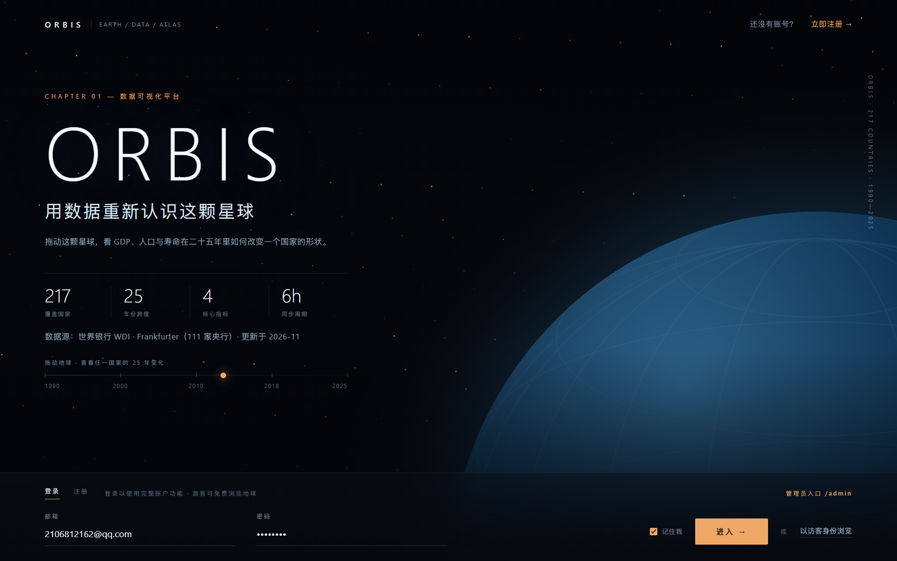
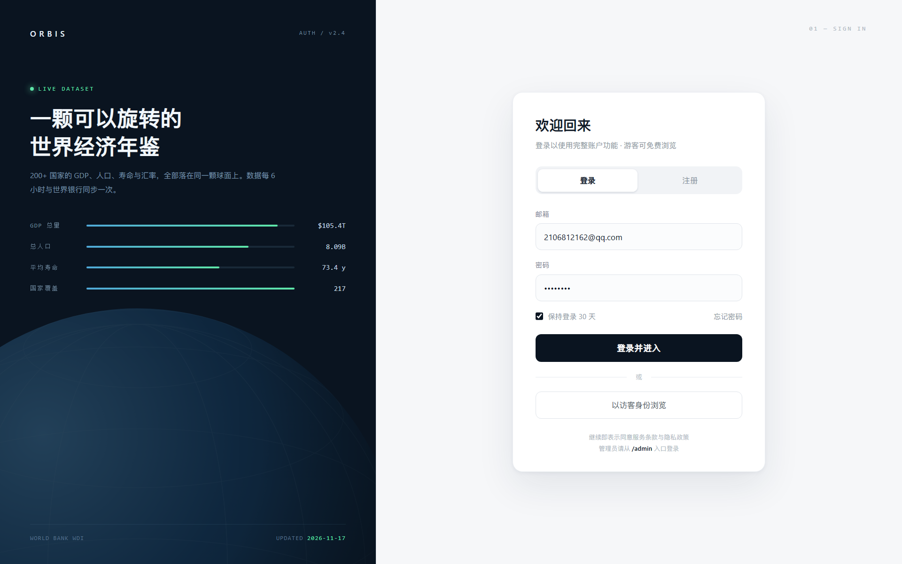
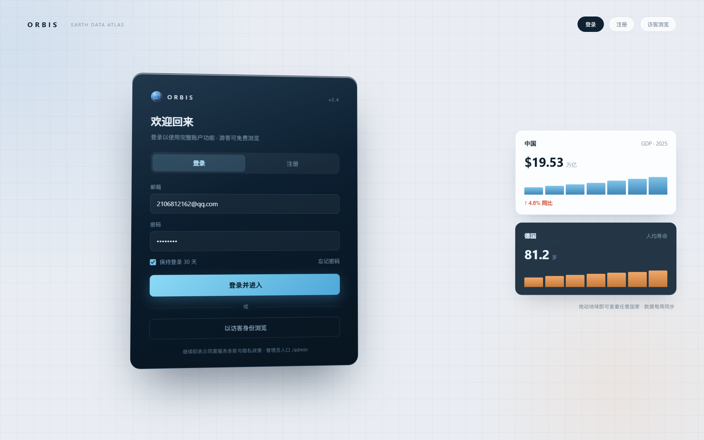
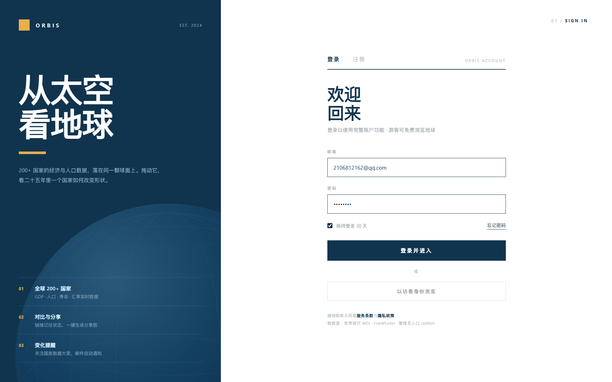

ORBIS 登录页 ·
六种其他风格
LOGIN SCREEN EXPLORATION / ROUND 2
1440 × 900 · 内容与线上登录页一致
深蓝太空版之外的方向

E
纸白编辑
EDITORIAL LIGHT
浅色·印刷感
把深空换成
米白纸感
，衬线标题 + 单色墨线，像一本地理年鉴的扉页
表单不用卡片，靠
一条竖线
分区，输入框只留底边线
唯一强调色是赭石橙，出版社气质，适合对外汇报与媒体场景

F
深空聚焦
ORBITAL FOCUS
深色·转化优先
去掉左侧介绍，
只留一张居中卡片
，视觉负担最小
地球压在下半屏做背景，中间加暗场让卡片浮起来
卖点收成卡片底部一行小字，适合"登录即走"的效率型用户

G
电影海报
CINEMATIC HERO
戏剧性·品牌感
超大 ORBIS 字标 + 副题「用数据重新认识这颗星球」，海报式构图
补了
217 国家 / 25 年 / 4 指标 / 6h 同步
数据橱窗，左栏不再是空文案
表单变成
底部通栏
一行横排，配 1990→2025 年份轴与星点黑场

H
双色分屏
LIVE SPLIT
明暗对比·数据感
左深右浅硬分割，左边是
实时数据条
（GDP / 人口 / 寿命 / 覆盖率）
用数字本身做卖点，比文案更直接，也暗示"数据是真的"
右侧纯白卡片承载表单，注册/登录是全场唯一的暗色按钮

I
网格浮卡
FLOATING CARD
浅色·产品预告
浅灰网格底 + 深色卡片
轻微 3D 倾斜
，像一张放在图纸上的卡片
右侧放两枚
真实数据预览卡
（中国 GDP / 德国寿命），登录前先看到产品
整体最"现代 SaaS"，适合做官网入口页

J
瑞士色块
SWISS GRID
强排版·克制
左侧整块深蓝 + 一个
金色小方块
，无圆角、无渐变、无毛玻璃
表单全部直角 + 1.5px 描边，输入聚焦时出现
金色硬投影
印刷级排版语言，气质最"杂志/机构"，界面零装饰成本
每张图为 1440×900 实际渲染，点击缩略图可打开对应 HTML 源码
ORBIS · 用数据重新认识这颗星球